Настройка системы
Основные параметры сервера
Основные настройки сервера находятся в разделе 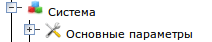. Щелкните левой кнопкой мыши по разделу "Основные параметры", появится окно
основных параметров системы:
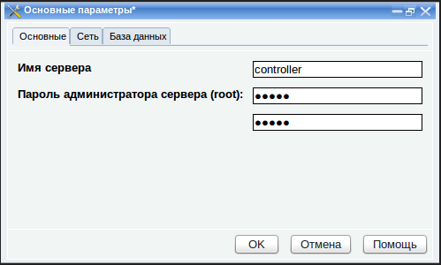
Для удобства, параметры системы разбиты на разделы. Каждый раздел находится на своей закладке окна "Основные параметры"
Основные
- Имя
сервера - имя, под которым сервер отображается в Сетевом
окружении. (Значение по умолчанию: controller).
- Пароль
администратора сервера (root) - пароль
учетной записи пользователя root. Этот пользователь имеет полный доступ
ко всем ресурсам сервера, на него не распространяются правила,
ограничивающие доступ к общим папкам. Также, этот пользователь может
добавлять компьютеры в домен, если сервер выполняет роль контроллера
домена. Этот пользователь может удаленно подключаться к серверу в
режиме удаленного рабочего стола и в режиме командной строки. Его
пароль нужно указать дважды (значение по умолчанию: 111111)
Сеть
На этой закладке находится стандартный набор параметров для подключения
сервера к сети:
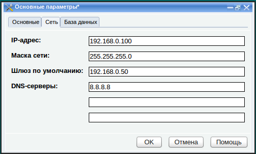
- IP-адрес - Должен быть
уникален в данной сети. (значение по умолчанию: 192.168.0.100)
- Маска
сети - Должна быть такой же, как и у других узлов данной сети
(значение по умолчанию: 255.255.255.0)
- Шлюз
по умолчанию -
адрес узла, через который локальная сеть подключается к Интернет. Если
сервер не должен быть подключен к Интернет, оставьте это поле
пустым (значение по умолчанию: 192.168.0.50)
- Серверы
DNS - серверы,
преобразующие доменные имена Интернет-сайтов в IP-адреса и обратно.
Обычно их можно найти в договоре с провайдером. Если не помните, можете
оставить значение по умолчанию, это общедоступный DNS-сервер компании
Google, который отлично работает, и в основном даже лучше чем
DNS-серверы многих провайдеров. (Значение по умолчанию: 8.8.8.8).
ВАЖНО: При изменения
IP-адреса, откройте окно "
Настройка
модуля управления сетью" и укажите этот IP-адрес в качестве адреса
сервера DNS. Это необходимо для корректной работы DNS-сервера.
База данных
Большинство своих настроек сервер
хранит в специальной базе данных. Он обращается к этой базе по
протоколу LDAP. На этой закладке нужно указать параметры доступа к
серверу, на котором находится эта база данных.
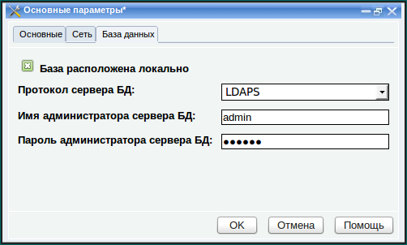
- Протокол сервера БД - протокол, по которому данный сервер будет подключаться к базе данных. Можно выбрать один из двух вариантов:
- LDAP - протокол доступа к базе данных, которая построена в виде
иерархического каталога. В таких базах данных удобно хранить системные
настройки.
- LDAPS - это протокол LDAP с поддержкой SSL, что позволяет передавать данные в зашифрованном виде.
- Имя администратора сервера БД - пользователь, заведенный на сервере LDAP, от имени которого производится подключение к серверу. По умолчанию "admin".
- Пароль администратора сервера БД - пароль этого пользователя (по умолчанию 111111)
Сервер может работать с базой данных в двух режимах:
- база данных находится локально, то есть сам сервер является также
сервером LDAP. Сервер работает в этом режиме если включен флажок "База расположено локально".
Это вариант по умолчанию. В большинстве случаев рекомендуем
использовать именно его. В этом случае, заполняя поля "Имя
администратора БД" и "Пароль администратора БД" вы фактически
устанавливаете имя и пароль администратора LDAP-сервера. В данном
случае в качестве протокола рекомендуется выбрать "LDAPS", так как
локальный сервер LDAP поддерживает все протоколы, но работать по LDAPS безопаснее.
- база данных находится на отдельном сервере LDAP. Сервер работает в этом режиме если флажок "База расположена локально" выключен. В этом случае в окне появляется дополнительное поле "Имя сервера БД",
в котором указывается IP-адрес или имя хоста, на котором установлен
LDAP-сервер. Остальные поля (имя, пароль и протокол) устанавливаются в
соответствии с настройками этого сервера. На сервере должна быть
предварительно создана пустая база данных и организован доступ к ней от
имени определенного пользователя. Такой вариант работы предназначен для
специализированных решений. Например, если нужно чтобы настройки
группы серверов хранились в одной централизованной базе данных, которая находится на одном из них.
После изменения параметров нажмите кнопку "OK"
и дождитесь завершения операции. Желательно чтобы в этот момент
пользователи не обращались к серверу, так как системные параметры
затрагивают практически все службы, установленные на сервере и в
процессе применения настроек происходит их перезапуск.
Панель управления
Этот раздел включает подраздел "Пользователи", который позволяет
изменять существующие учетные записи администраторов панели управления
сервером, а также создавать новые. Изначально заведена одна учетная
запись администратора: admin с
паролем 111111, от имени
которой
происходит подключение к панели управления в первый раз. Рекомендуется
как можно быстрее изменить пароль администратора.
Также с помощью этого раздела выполняется обновление системы через
Интернет.
Создание новой учетной записи пользователя панели управления
1. Разверните раздел "Панель управления",
появится группа "Пользователи"
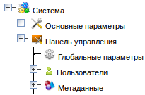
2. Нажмите правой кнопкой мыши на группе Пользователи и выполните команду "Новый пользователь" из контекстного
меню
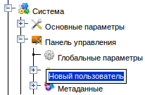
3. Появится окно для ввода данных учетной записи нового пользователя
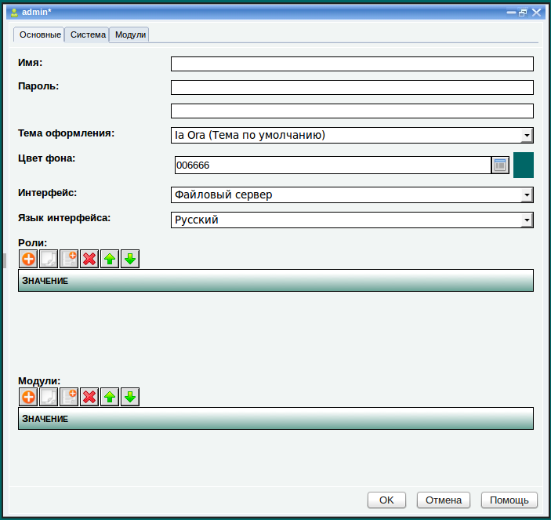
4. Требуется ввести "Имя"
администратора, его "Пароль".
- Имя должно содержать только
английские символы
- Пароль может содержать любые
символы.
- И имя и пароль чувствительны к
регистру, например, "admin" и "Admin" считаются разными пользователям.
Остальные
поля не обязательно изменять. Часть из них относятся к внешнему виду
панели управления для данного пользователя. Остальные являются
системными настройками, которые будут учитываться при взаимодействии
именно этого пользователя с панелью управления.
На внешний вид Панели управления влияют следующие параметры:
- Тема оформления - определяет общий дизайн окон и элементов управления в них
- Цвет фона - цвет фона
панели управления, который указывается как шестнадцатеричное число.
Можно выбрать цвет фона из списка, нажав на кнопку справа от поля ввода
- Интерфейс - позволяет выбрать интерфейс панели управления, которым будет пользоваться данный администратор. Обычно в панель управления
встроен всего один интерфейс "Файловый сервер". Однако, в некоторых
специализированных решениях может быть несколько интерфейсов, в случае
если разные администраторы выполняют разную роль и в зависимости от
этого по разному должны видеть панель управления. Новые интерфейсы
создаются и встраиваются в систему компанией ЛВА или ее партнерами -
внедренцами решений на платформе "ЛВА Конструктор Web-приложений".
- Язык
интерфейса - в данный момент панель управления доступна только на
русском языке. Ведутся работы по переводу интерфейса на другие языки.
Работу измененных параметров внешнего вида можно увидеть при
следующем входе в панель управления от имени этого пользователя.
Все остальные параметры на данной закладке и на других предназначены
исключительно для специалистов компании ЛВА или ее партнеров,
осуществляющих внедрение и адаптацию сервера, с учетом специфических
требований клиента.
В подавляющем большинстве случаев значения этих параметров по умолчанию
будут успешно работать. Прежде чем что-то менять, обязательно свяжитесь
с партнером, который внедрял этот сервер в вашей организации или со
службой технической поддержки ЛВА, координаты которой можно найти в
конце этого раздела.
5. После завершения редактирования нажмите "OK". Новая учетная запись
появится в группе "Пользователи". При следующем запуске панели
управления, можно входить от имени этой новой учетной записи.
Изменение параметров учетной записи пользователя
Можно изменить имя, пароль и другие параметры любого, уже заведенного пользователя.
Существует два способа:
1. Разверните группу "Пользователи"
и щелкните левой кнопкой мыши по
нужной учетной записи. Появится окно с данными учетной записи, такое
же, как показано на прошлом изображении. Отредактируйте данные и
нажмите "OK".
2. Разверните группу "Пользователи",
щелкните правой кнопкой мыши по
нужной учетной записи и выполните команду "Изменить" из контекстного
меню:
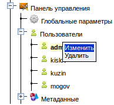
Появится окно с данными учетной записи, такое же, как показано на
прошлом изображении. Отредактируйте данные и нажмите "OK".
Удаление учетной записи пользователя
1. Разверните группу "Пользователи"
2. Нажмите правой кнопкой мыши на учетной записи пользователя,
которую хотите удалить
3. Выполните команду "Удалить"
из контекстного меню
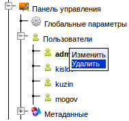
4. Система спросит: "Вы действительно
хотите удалить пользователя ?". Если не передумали, ответьте "Да".
Обновление системы
Панель управления сервером это
конфигурация, созданная компанией ЛВА с помощью платформы "ЛВА Конструктор Web-приложений 2".
На момент приобретения, на сервере установлена самая новая исполняющая
среда платформы "ЛВА Конструктор Web-приложений 2" и самая новая
конфигурация панели управления сервера LVA Business Server.
Однако специалисты компании постоянно
совершенствуют и саму платформу и конфигурации, созданные на ее основе
и выпускают пакеты обновлений. При выходе очередного обновления,
компания ЛВА делает почтовую рассылку всем пользователям решений на
базе платформы "ЛВА Конструктор Web-приложений 2". В рассылке приведен
список того, что обновилось в системе. В этом списке может быть
описание новых функций, появившихся в системе, либо описание
исправленных ошибок.
Чтобы обновить свою панель управления
до самой новой версии нужно чтобы сервер был подключен к Интернет.
Чтобы выполнить обновление нужно:
1. Войти в Панель управления
2. Развернуть раздел "Система"
3. Нажать правой кнопкой мыши на
разделе "Панель управления" и
выполнить команду "Проверить обновления"
из контекстного меню.
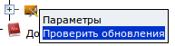
4. Система покажет окно "Будет выполнена проверка наличия обновлений
..."
5. После нажатия на кнопку "OK" система проверит, есть ли на
сервере ЛВА обновления и если есть, предложит установить их, отобразив
диалоговое окно "Появилась новая
версия системы. Обновить сейчас ?". Если же новых версий не
обнаружено, то появится окно "Система
находится в актуальном состоянии".
6. Если обновления появились и
система получила утвердительный ответ на вопрос "Обновить сейчас ?", то
будет выполнено сравнение версии панели управления и платформы,
установленных на сервере с версиями, доступными для обновления. После
этого система загрузит и установит все необходимые обновления в
правильной последовательности.
7. После того как обновление
выполнится, система перезагрузит панель управления в браузере. Номер
версии в заголовке окне браузера должен измениться.
При загрузке обновления из Интернет
могут возникнуть различные проблемы, о чем система обязательно сообщит.
При возникновении проблем нужно проверить соединение сервера с Интернет
и повторить операцию еще раз.
Компания ЛВА призывает всех
пользователей решений на базе "ЛВА Конструктор Web-приложений 2" писать
по адресу
info@lvacompany.ru
о всех недочетах и ошибках, обнаруженных в процессе работы с Панелью
управления, а также любые пожелания, связанные с панелью управления
(какие еще возможности хотелось бы иметь и как хотелось бы улучшить
существующие возможности).
Эта информация помогает нам двигаться
в правильном направлении при выпуске обновлений.
Интеграция с другими серверами
Файловый сервер может интегрироваться с другими серверами, созданными
компанией ЛВА. Для этой цели предназначен подраздел "Интеграция",
который находится в разделе "Основные параметры".
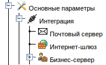
Интеграция с почтовым сервером
Если в вашей сети есть почтовый сервер Mystix Collector MX и
используется совмещенная панель управления, которая включает модули для
управления как файловым сервером, так и почтовым, то вы можете
объединить эти модули между собой. Для этого откройте подраздел
"Почтовый сервер"
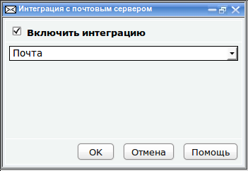
Включите флажок "
Включить интеграцию", выберите из раскрывающегося
списка имя модуля почтового сервера, с которым нужно объединиться и
нажмите
ОК.
После этого действия модули панели управления файловым сервером и
почтовым сервером становятся связанными между собой. Модуль файлового
сервера может вызывать команды модуля почтового сервера. При
создании
нового пользователя на файловом сервере, на почтовом сервере будет
выполняться команда создания почтового ящика для этого пользователя с
адресом в формате
<имя-пользователя>@<имя-домена-файлового-сервера>.
Интеграция с Интернет-шлюзом
Если в файловый сервер интегрирован Сетевой центр и если в сети с
файловым сервером есть Интернет-шлюз Mystix Bastion ACS, можно
воспользоваться модулем интеграции с ним. Для этого запустите подраздел
"
Интернет-шлюз":
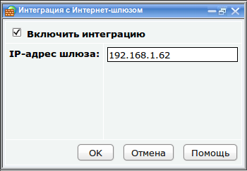
укажите IP-адрес шлюза, включите флажок "Включить интеграцию" и нажмите
"ОК".
Теперь в окне регистрации нового хоста в "Сетевом центре" появятся
дополнительные закладки с параметрами, влияющими на доступ этого хоста
к Интернет. Подробнее читайте в разделе "Создание учетной записи нового
хоста".
Примечание: При изменении IP-адреса интернет-шлюза нужно менять его и в этом окне.
Интеграция с бизнес-приложениями
Если в вашей сети или на самом сервере установлены какие-либо
бизнес-приложения, созданные на платформе "ЛВА Конструктор
Web-приложений 2", можно объединить их с сервером. Все такие
бизнес-приложения работают под управлением модуля "Бизнес-сервер". Вы можете соединиться с ним, используя соответствующий модуль интеграции. Для этого запустите подраздел "Бизнес-сервер":
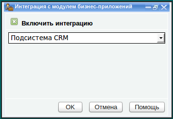
В раскрывающемся списке выберите
модуль бизнес приложения, с которым необходимо интегрироваться и
включите флажок "Включить интеграцию".
Теперь для любого объекта панели
управления (пользователям, группам, хостам и т.д), а также для любого
файла, хранящегося на сервере можно создать информационную карточку, на
которой указывается любая информация об объекте. Можно связать
информационные карточки между собой, а также привязать их к объектам
бизнес-приложения, связав таким образом файлы и другие объекты сети с
бизнесом, которым занимается организация. Подробнее о возможностях
бизнес-сервера читайте в разделе "Организация аналитического хранилища".